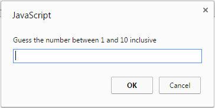
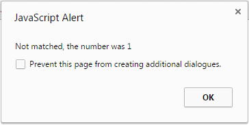
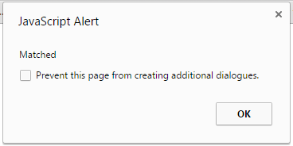

<!DOCTYPE html PUBLIC "-//W3C//DTD XHTML 1.0 Transitional//EN" "http://www.w3.org/TR/xhtml1/DTD/xhtml1-transitional.dtd">
<html xmlns="http://www.w3.org/1999/xhtml">
<head>
<meta http-equiv="Content-Type" content="text/html; charset=utf-8" />
<title>Untitled Document</title>
</head>

<body>

<script>

//Research how the term "Math" works in JavaScript
//Research how the term "ceil" works in JavaScript
//Research how the term "random" works in JavaScript
var num = Math.ceil(Math.random() * 10);
var gnum = prompt("Guess the number between 1 and 10");
if (num == gnum) {
	document.write("Matched")
} else {
	document.write("Not matched, the number was " + num )
}
//Create a variable called "num" and asign it the value of Math ceil(Math random() * 10, once you have identified the correct syntax, this will choose a random number between 1 and 10
//Create a variable called "gnum" and assign it a pop up box to allow a user to input a number - and a message "Guess the number between 1 and 10"

//Create an If statement - if gnum is equal to num the pop up a box saying "Matched!"
//else
//a pop up saying "not matched, the number was "the value of the num variable"

</script>
<!--


-->
</body>
</html>
